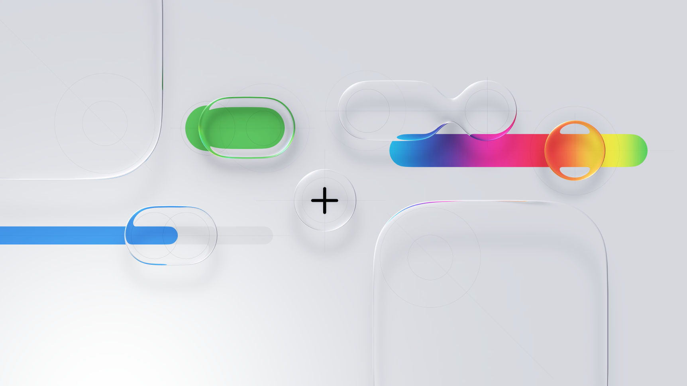
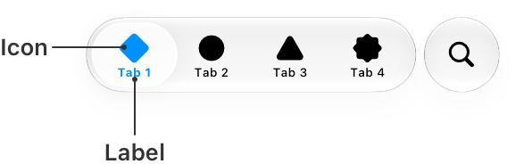
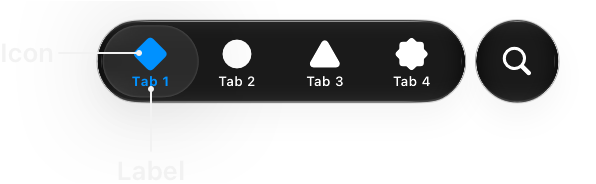
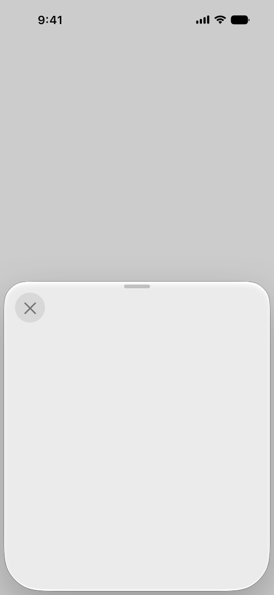
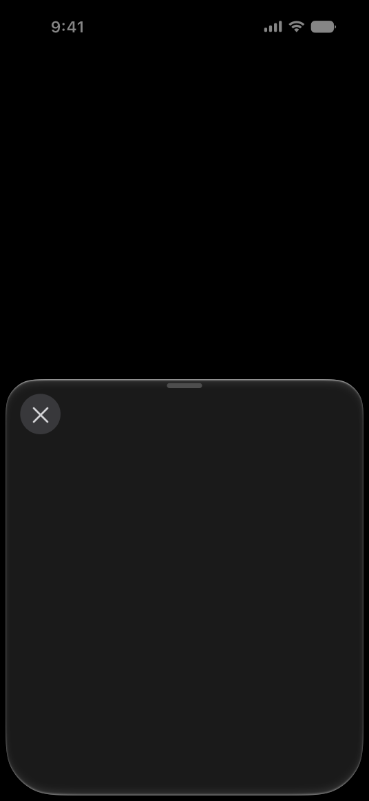

sudoku.
- 开始时间
- 负责事项
- 独立设计产品、交互与视觉，并借助 AI 开发原生 App。
- 进度
- 已在 App Store 发布，持续维护与迭代。
这是一款什么样的数独？
我想安静地玩一局，却常被广告和繁杂界面打断。这是我在没有系统学过代码的情况下，第一次借助 AI 独立完成的 App：为已有数独兴趣的日常玩家，保留轻松进入、独自推敲与分享的空间。
凡事有解。
多一点耐心，再找一条线索。
它如何被使用
更多界面
填写、候选与撤销围绕同一局。顶部进度条兼作回溯入口，向左右拖动，就能回查较早的落子状态。
选择一个组件，看看它在这一局里做什么。
不即时纠错，也要能回看。
纸上模式把判断留给玩家，回溯为自查提供退路。完成比例回答「填了多少」，历史位置回答「回到哪一步」；回溯恢复状态，不替玩家判断哪一步出错。
辅导的目标，是让人自己想通。
最初的 AI 回答太长。我把要求写进 Skill：语气温和、语言简短，逐步提供线索，避免直接代答。希望一次提示只推进一点思考，留出自己顿悟的空间。
上方录屏展示内置离线辅导，不是联网 AI 对话。
分享的不只是题目，还有进行到哪一步。
卡住的一局也值得交流。保留填写与候选，让朋友从相同的条件继续观察，而不必重新描述整个盘面。
视觉系统
极简、克制，也足够完整。
盘面是主体，工具与辅助退到需要时。
把时间留给题目。
不设竞速和排名。五档难度承接不同的投入程度。
像纸面，也像执笔。
用字形区分阅读、题目与自己的笔迹。
原生组件的选择与实现
先了解 SwiftUI 已有的能力，再指导 AI 选择实现。保留熟悉的操作，在字形、颜色和层级上建立自己的气质。

暂停与更多使用系统玻璃材质；我决定控件位置与强调程度。


用 TabView 收纳记录、残局、教程与设置，让主盘面保持专注。


用 Sheet 承载设置与次级任务；调整内容层级，保留返回对局的上下文。
纸白、墨色与低饱和信号色。
主题色提示状态；长按格子，用六色标记思路。
六种主题色，也支持自定义。
迭代与交付
反复口述微调很慢。我先在 Figma 定稿，再把分组测量、原生实现与模拟器校对写成 Skill。
查看界面还原方法从网页原型开始
先完成一局数独，再寻找自己的表达。
迭代记录
先把一局数独做完整：四档难度直接排在盘面上方，错误次数与计时同时显示，设置集中在一张长列表里。此时先验证能否独立完成产品，界面仍是较常见的工具布局。
网页原型取自 5 月 31 日的工程快照，本次重新运行采集。
让自己的交互开始出现
点阵进度、分步辅导与残局分享，逐渐围绕同一局展开。
迭代记录
进入原生版本后，顶部增加点阵进度条；难度选择收成一个入口。辅导与分享以卡片展开，盘面仍留在背后。常用操作开始围绕同一局组织，但顶栏入口和工具文字还比较多。
6 月 12 日留存的原生模拟器截图。
继续整理信息与功能层级
收拢顶栏入口，把设置与教程组织得更清楚。
迭代记录
这一阶段继续调整顶栏与工具区，保留进度、难度和题目出处；辅导方式与纸上模式在设置里分组，教程按技法展开。功能逐渐完整，也促使我继续思考哪些入口应留在主盘面。
7 月 1 日留存画面，保留当时的界面语言。
从整页调整，走到具体细节
从整页布局，细化到分享卡的一行对齐。
迭代记录
进入维护阶段，迭代落到更细的地方。例如分享卡中，残局名称、编辑入口与已填进度需要形成清楚的一组。这里保留同一天的调整前后画面，让微小的对齐变化也能被看见。
10 月 16 日分享卡的调整前后。
落到当前的维护版本
用字形区分题目与笔迹，把辅助留到需要时。
迭代记录
当前版本进一步区分题目、填写与候选的字形，主盘面收敛为进度、题目与输入工具。设置将规则、辅助和外观分别收纳，辅导与分享按需展开。简洁由这些具体取舍逐步形成。
当前维护工程采集，产品已发布并持续维护。